5 The Population Genetics of Divergence and Molecular Substitution
“History is just one damn thing after another.” -sometimes attributed to Arnold Toynbee
There are over \(30\) million base pair substitutions between human and chimpanzees, sites where humans carry one allele and chimps another at orthologous locations. These changes have occurred in the seven million years or so since human and chimp last shared a common ancestor. Other subsitutions are shared between the sister species human and chimp to the exclusion of gorilla, yet others are shared between human, chimps and Gorilla but not Orangs. Long-term evolution, from the molecular perspective, is just one damn substitution after another. These substitutions represent changes at just a small percentage of sites genome-wide as we share the majority of our genome, our evolutionary history, and our biology with the other great apes. Each of the substitutions must have arisen as a mutation in the population, spread through the population as a polymorphism before eventually reaching fixation. What forces drove the spread of these alleles through the population to become substitutions?
| Human | accacagcatttgttagttactgccaagaagcctgtatctgtagggtaaaatcctcgctgaagtgggttg |
|---|---|
| Chimp | ......................................g...........c................... |
| Gorilla | ..................................................cc.................. |
| Orangutan | .........c.........c..............................c................... |
| Gibbon | ...................c..............................—................. |
| Crab-eating macaque | g.............gg...c..............................c..t.t.............. |
Many substitutions were driven by selection, as there has undoubtedly been plenty of adaptive phenotypic adaptive evolution in great apes. However, these adaptive changes may be a small minority of all the subsitutions, for a start many of these substitutions have occurred in non-coding DNA with no known functional effect. Thus it is reasonable initial position that the majority of substitutions genome-wide may well be neutral. How can we hope to identify regions undergoing adaptive divergence? How could we hope to address the claim that many amino-acid changing substitutions are also neutral, as posited by the Neutral theory of molecular evolution. One way forward is to understand what neutral theory predicts for the rate of molecular substition, and then develop ways to test these ideas.
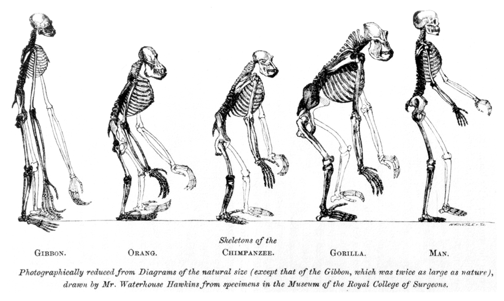

5.1 The Neutral Substitution process.
So how then do neutral substitutions occur? It is very unlikely that a rare neutral allele accidentally drifts up to fixation; more likely, such an allele will be eventually lost from the population. However, populations experience a large and constant influx of rare alleles due to mutation, so even if it is very unlikely that an individual allele fixes within the population, some neutral alleles will fix by chance. So we’ll need to understand the probability that a neutral mutation fixes, and then how we can think about the rate of substitutions accumulate over time.
probability of the eventual fixation of a neutral allele
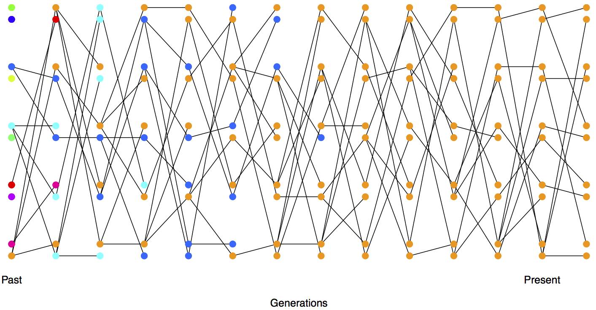
An allele which reaches fixation within a population is an ancestor to the entire population. In a particular generation there can only be a single allele that all other alleles at the locus in a later generation can claim as an ancestor (See Figure 5.2). At a neutral locus, the actual allele does not affect the number of descendants that the allele has (this follows from the definition of neutrality: neutral alleles don’t leave more or less descendants on average than other neutral alleles). An equivalent way to state this is that the allele labels don’t affect anything; thus the alleles are exchangeable. As a consequence of being exchangeable, any allele is equally likely to be the ancestor of the entire population. In a diploid population of size \(N\), there are \(2N\) alleles, all of which are equally likely to be the ancestor of the entire population at some later time point. So if our allele is present in a single copy, the chance that it is the ancestor to the entire population in some future generation is \({}^{1}\!/\!{}_{(2N)}\), i.e. the chance our neutral allele is eventually fixed is \({}^{1}\!/\!{}_{(2N)}\). In Figure 5.2, our orange allele in the first generation is one of 10 differently coloured alleles, and so has a \(1/10\) chance of being the ancestor of the entire population at some later time point (and in this simulation it does become the common ancestor, by the 9th generation).
More generally, if our neutral allele is present in \(i\) copies in the population, of \(2N\) alleles, the probability that this allele becomes fixed is \({}^{i}\!/\!{}_{(2N)}\), i.e. the probability that a neutral allele is eventually fixed is simply given by its frequency (\(p\)) in the population. (We can also derive this result by letting \(Ns \rightarrow 0\) in Equation 12.10, a result we’ll encounter later.)
How long does it take on average for such an allele to fix within our population? In developing Equation 4.30 we’ve seen that it takes on average \(4N\) generations for a large sample of alleles to all trace their ancestry back to a single most recent common ancestral allele. Any single-base pair change which arose as a single mutation at a locus, and fixed in the population, must have been present in the sequence transmitted by the most recent common ancestor of the population at that locus. Thus it must take roughly \(4N\) generations for a neutral allele present in a single copy within the population to fix. This argument can be made more precise, but in general we would still find that it takes \(\approx 4N\) generations for a neutral allele to go from its introduction to fixation with the population.
Rate of substitution of neutral alleles
A substitution between populations that do not exchange gene flow is simply a fixation event within one population. The rate of substitution is therefore the rate at which new alleles fix in the population, so that the long-term substitution rate is the rate at which mutations arise that will eventually become fixed within our population.
Let’s assume, based on our discussion of the neutral theory of molecular evolution, that there are only two classes of mutational changes that can occur with a region, highly deleterious mutations and neutral mutations. A fraction \(C\) of all mutational changes are highly deleterious, and cannot possibly contribute to substitution nor polymorphism. The other \(1-C\) fraction of mutations are neutral. If our total mutation rate is \(\mu\) per transmitted allele per generation, then a total of \(2N \mu (1-C)\) neutral mutations enter our population each generation.
Each of these neutral mutations has a \({}^{1}\!/\!{}_{(2N)}\) probability chance of eventually becoming fixed in the population. Therefore, the rate at which neutral mutations arise that eventually become fixed within our population is
\[2N\mu(1-C)\frac{1}{2N} = \mu(1-C) \tag{5.1}\]
Thus the rate of substitution, under a model where newly arising alleles are either highly deleterious or neutral, is simply given by the mutation rate of neutral alleles, i.e. \(\mu(1-C)\).
Consider a pair of species that have diverged for \(T\) generations, i.e. orthologous sequences shared between the species last shared a common ancestor \(T\) generations ago. If these species have maintained a constant \(\mu\) over that time, they will have accumulated an average of
\[2\mu(1-C)T \tag{5.2}\]
neutral substitutions. This assumes that \(T\) is a lot longer than the time it takes to fix a neutral allele, such that the total number of alleles introduced into the population that will eventually fix is the total number of substitutions.
This is a really pretty result as the population size has completely canceled out of the neutral substitution rate. However, there is another way to see this in a more straight forward way. If I look at a sequence in me compared to, say, a particular chimp, I’m looking at the mutations that have occurred in both of our germlines since they parted ways \(T\) generations ago. Since neutral alleles do not alter the probability of their transmission to the next generation, we are simply looking at the mutations that have occurred in \(2T\) generations worth of transmissions. Thus the average number of neutral mutational differences separating our pair of species is simply \(2\mu (1-C) T\).
Implications for the Molecular Clock.
A number of observations follow under this model, from Equation 5.2. The first is that a primary determinant of patterns of molecular evolution in a genomic region is the level of constraint (\(C\)). This pattern generally seems to hold empirically: non-coding regions often evolve more rapidly than coding regions, synonymous substitutions accumulate faster than nonsynonymous, and nonsynonymous substitutions accumulate faster in less vital proteins than ones that are absolutely necessary for early development. For example, fibrinopeptides evolve in a less constrained manner than the cytochrome c gene, see Figure 5.3. Note that this constraint prediction is not a unique prediction of the neutral model, e.g. less constrained regions may also be better able to evolve adaptively. However, it is a fantastically useful general insight, e.g. it allows us to spot putatively functional non-coding regions by looking for genomic regions that have very low levels of divergence among distantly related species.
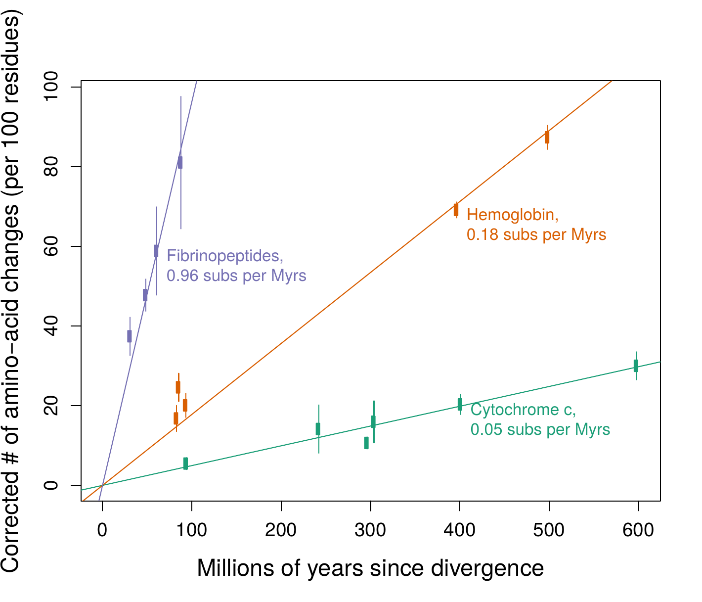
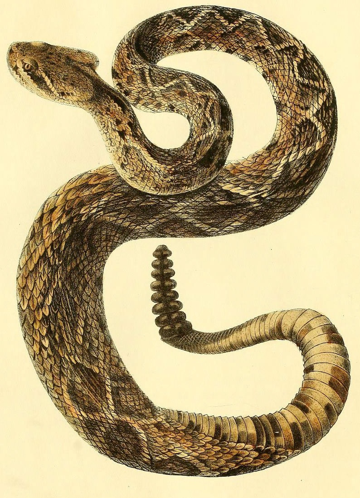
The second important insight, and critical for the development of the neutral theory, is that Equation 5.2 is seemingly consistent with Zuckerkandl and Pauling (1965)’s hypothesis of a surprisingly constant, protein molecular clock. The protein molecular clock is the observation that for some proteins there’s a linear relationship between the number of non-synonymous (NS) substitutions and the time species last shared a common ancestor in the fossil record. Dickerson (1971) provided an for early example of this observation (Figure 5.3), by comparing various organisms whose molecular sequences were available to him. For example, he found that humans and rattlesnakes, who last share a common ancestor in the fossil record around 300 million years, are separated by roughly \(15\) NS substitutions per \(100\) sites in the cytochrome c protein. While, humans and dogfish, which diverged around 400 million years, are separated by \(19\) NS substitutions per \(100\) sites in this gene.
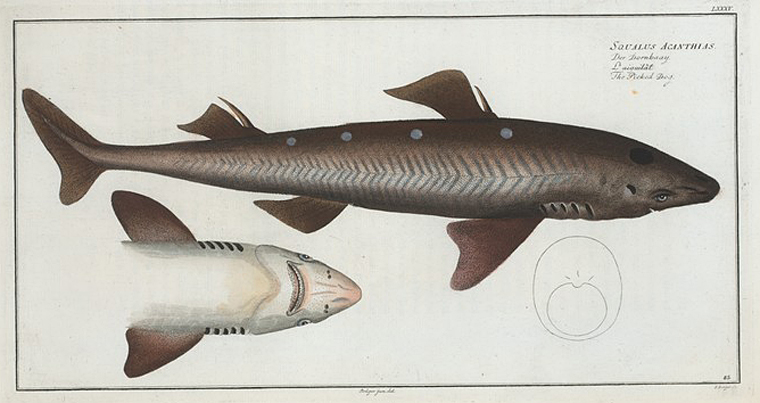
In Equation 5.2, if we double the amount of time separating a pair of species \(T\), we double the number of substitutions predicted. Note that for this to be true \(T\) must be measured in generations. To explain a protein molecular clock between species that clearly differed dramatically in generation time it was hypothesized that the mutation rate actually scaled with generation time, i.e. short-lived organisms introduced fewer mutations per generation, e.g. as they had fewer rounds of mitosis. This generation-time assumption meant that the mutation rate per year could be constant, such that \(\mu T\) would be a constant for pairs of species that had diverged for similar geological times, which are measured in years, even if the organisms differed in generation time. This assumption would allow neutral theory to be consistent with a protein molecular clock measured in years. We now know that this critical generation time assumption is false: organisms with shorter generation times have somewhat higher mutation rates per year so a strict neutral model is inconsistent with the protein molecular clock. We’ll return to these ideas when we discuss the fate of very weakly selected mutations in Chapter 12 and Ohta (1973)’s Nearly Neutral theory. If you are still reading this send Graham a picture of Tomoko Ohta receiving the Crafoord Prize, an analog of the Nobel prize for biology, for her contributions to molecular evolution.
The contribution of ancestral polymorphism to divergence. If we are considering \(T\) to represent the divergence between long-separated species, then we can think of \(T\) as the time that the species split. However, for more recently diverged populations and species, we need to include the fact that the sorting of ancestral polymorphism contributes to divergence among species. In Figure 5.6, we see our two populations split \(T_s\) generations ago. However, the coalescence of our A and B lineage is necessarily deeper in time than \(T_s\). The top mutation was polymorphic in the ancestral population but now contributes to the divergence between A and B. Assuming that our ancestral population had effective size \(N_A\) individuals, and that our populations split cleanly with no subsequent gene flow, then
\[T = T_s + 2N_A. \tag{5.3}\]
If our species split time is very large compared to \(2N\) then we can think of \(T\) as the split time.
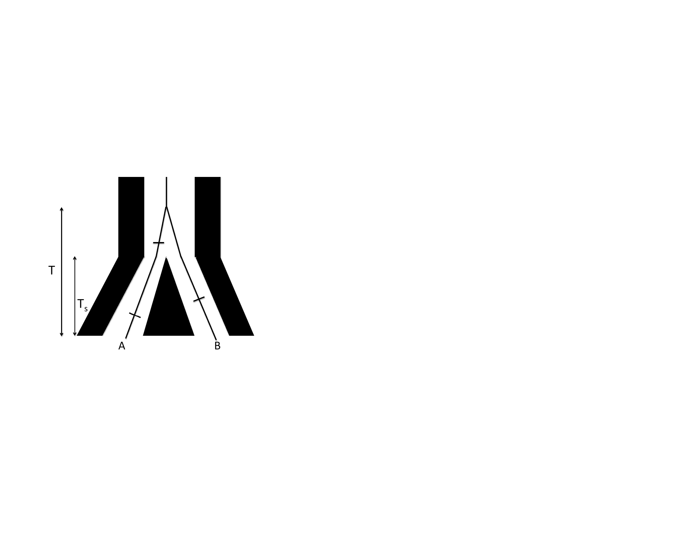
Question 5.1 For this, and the next question, assume that humans and chimps split around 5.5\(\times 10^6\) years ago, have a generation time 20 years, that the speciation occurred instantaneously in allopatry with no subsequent gene flow, and the ancestral effective population size of the human and chimp common ancestor population was 10,000 individuals.
Nachman and Crowell sequenced 12 pseudogenes in humans and chimps and found substitutions at 1.3% of sites.
A) What is the mutation rate per site per generation at these genes?
B) All of the pseudogenes they sequenced are on the autosomes. What would your prediction be for pseudogenes on the X and Y chromosomes, given that few mutations occur in the female germline than in the male germline per generation.
5.2 Tests of molecular evolution.
One of the great appeals of neutral models is they offer a simple null for us to test real data against.
Comparing the rates of non-synonymous to synonymous substitutions \({}^{d_N}\!/\!{}_{d_S}\)
One common tool in molecular evolution is to compare the estimated number (or rates) of substitutions in different classes of genomic sites, for example the ratio of the rates of non-synonymous (\(d_N\)) to synonymous substitutions (\(d_S\)) in a given gene. The simplest way to think about calculating \(d_N\) is to count up the non-synonymous changes and divide by the total number of positions in the gene where a non-synonymous point mutation could occur and then divide by time. We can do likewise for synonymous changes \(d_S\), and then take the ratio \({}^{d_N}\!/\!{}_{d_S}\). 1
1 This ignores the fact that some changes are more likely to occur by mutation than others and also does not account for multiple hits (multiple mutations at the same bp position). Therefore, in practice the ratio \({}^{d_N}\!/\!{}_{d_S}\) is more typically calculated by model-based likelihood and bayesian methods that can account for these features.
For the vast majority of protein-coding genes in the genome we see that \({}^{d_N}\!/\!{}_{d_S} < 1\). This observation is consistent with the view that non-synonymous sites are much more constrained than synonymous sites, i.e. that most non-synonymous mutations are deleterious and quickly removed from the population. If we are willing to make the assumption that all synonymous changes are neutral, \(d_S= \mu\), then we can estimate the degree of constraint on non-synonymous sites. (Note that synonymous changes can sometimes be subject to both positive and negative selection, but this neutral assumption is a useful starting place.)
Assume that a fraction \(C\) of non-synonymous changes are too deleterious to contribute to divergence, and that there are no beneficial mutations. Then, we expected rate of neutral non-synonymous substitutions is
\[d_N = (1-C) \mu \tag{5.4}\]
Dividing by \(d_S\), we find
\[{}^{d_N}\!/\!{}_{d_S} = (1-C) \tag{5.5}\]
Therefore, if we assume that non-synonymous mutations can only be strongly deleterious or neutral, we estimate the fraction of mutational changes that are constrained by negative selection as \(C= 1- {}^{d_N}\!/\!{}_{d_S}\). C has the interpretations of being the fraction of non-synonymous mutations that are quickly weeded out of the population by selection, and so do not contribute to divergence among species.
We can test whether our gene is evolving in a constrained way at the protein level by estimating \({}^{d_N}\!/\!{}_{d_S}\) and testing whether this is significantly less that \(1\). A \({}^{d_N}\!/\!{}_{d_S}\) test can provide evolutionary evidence that a stretch of DNA proposed to be protein-coding is subject to selective constraint, and so likely does encode for a functional protein. We can also perform a \({}^{d_N}\!/\!{}_{d_S}\) test on specific branches of a phylogeny for a gene, to test on which branches the gene is subject to constraint, or to test for changes in the level of constraint across the phylogeny.
Loss of constraint at pseudogenes.
While most protein genes evolve under constraint, we can find examples of genes that are evolving in a much less constrained manner. The simplest example of this is where the gene has lost function. Genes can lose function because of inactivating mutations that stop them being transcribed or translated into functional proteins. Such genes are called ‘pseudogenes’. When a gene completely loses function there is no longer selection against non-synonynous changes and so such mutations are just as free to accumulate as synonymous changes, and so \({}^{d_N}\!/\!{}_{d_S}=1\). Pseudogenes are a wonderful example of the extension of Darwin’s ideas about vestigial traits (‘Rudimentary organs’) to the DNA level; we can still recognize a once useful word (gene) whose spelling is slowly degrading. Our genomes are filled with old pseudogenes whose original meanings (functional protein coding sequences) are slowly being eroded through the accumulation of neutral substitutions. One nice example of a gene that has repeatedly lost function, i.e. become repeatedly psuedogenized, is the enamlin gene from the study of Meredith (2009).

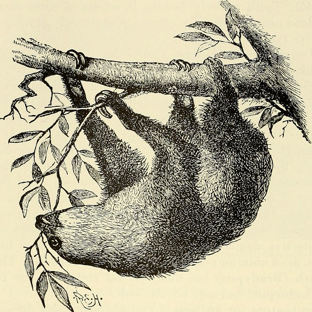
The protein enamlin is a key structural protein involved in the outer cap of enamel on teeth. Various mammals have secondarily evolved diets that do not require hard teeth, and so greatly reduced the selection pressure for hard enamel, or even teeth at all. For example, two-toed sloths (Choloepus), pygmy sperm whales (Kogia), and aardvark (Orycteropus) all lack enamel on teeth. Other mammals have lost their teeth entirely, e.g. giant anteaters (Myrmecophaga) and baleen whales. Due to this relaxation of constraint on the phenotype, the enamlin gene has accumulated pseudogenizing substitutions such as premature stop codons and frameshift mutations (see Figure 5.7 for examples). Meredith (2009) sequenced enamlin across a range of species and found that none of the species with enamel have frameshift mutations in enamlin, while 17/20 of species that lack enamel or teeth have frameshifts in enamlin, and all of them carry premature stop codons.
Meredith (2009) found that the branches of the enamlin phylogeny with a functional enamlin gene had an estimated \({}^{d_N}\!/\!{}_{d_S}= 0.51\), consistent with the protein evolving in a constrained manner. In contrast, the branches with a pseudogenized Enamlin had \({}^{d_N}\!/\!{}_{d_S} = 1.02\), consistent with the gene evolving a completely unconstrained way. The branches where the gene was likely transitioning from a functional to non-function state, i.e. pre-mutation and mixed, had intermediate values of \({}^{d_N}\!/\!{}_{d_S}=0.83-0.98\), consistent with a transition from a constrained to unconstrained mode of protein evolution somewhere along these branches of the phylogeny.
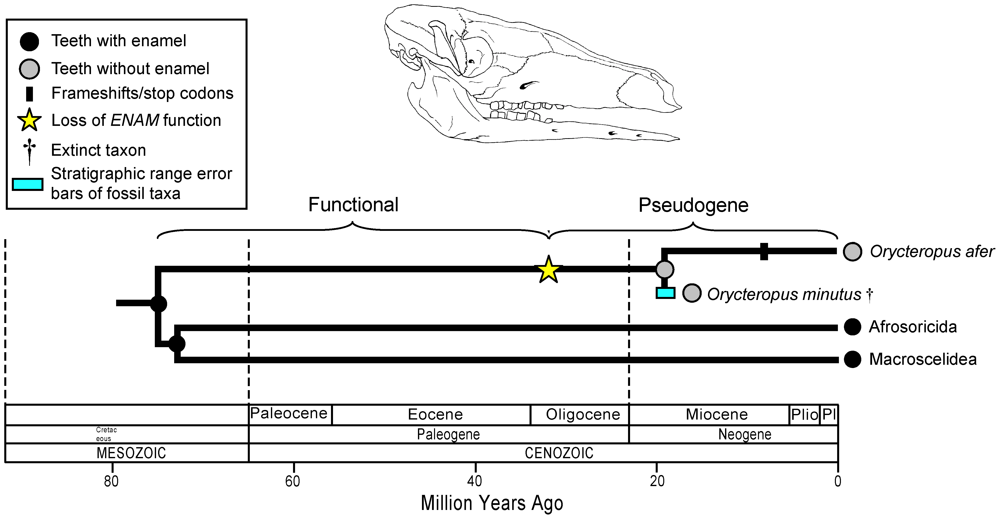
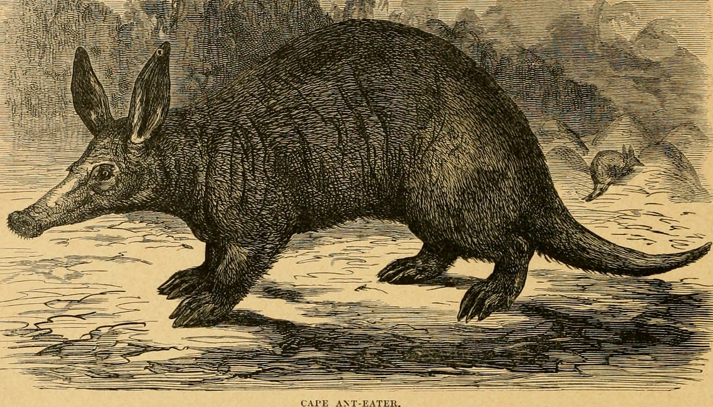
Question 5.2 The enamlin gene was pseudogenized somewhere along the branch leading to Aardvarks (Orycteropus afer), see Figure 5.9. Meredith (2009) estimated that this branch has a \({}^{d_N}\!/\!{}_{d_S}=0.75\)
A) Calculate the average constraint against amino-acid changes on this branch.
B) Aardvarks last shared a common ancestor with Afrosoricida (golden moles, tenrecs) and Macroscelidea (elephant shrews) around \(\sim 75.1\) million years ago in the Cretaceous. Assume that for the portion of the branch while enamlin was functional \({}^{d_N}\!/\!{}_{d_S} = 0.51\) and after it was pseudogenized there was no constaint (i.e. \({}^{d_N}\!/\!{}_{d_S} = 1\)). Based on the branch’s average \({}^{d_N}\!/\!{}_{d_S}=0.75\), can you estimate the time at which enamlin was pseudogenized? (I.e. when is the star in Figure 5.9?)
Adaptive evolution and \({}^{d_N}\!/\!{}_{d_S}\). Clearly genes are not only subject to neutral and deleterious mutations; beneficial mutations must also arise and fix from from time to time. Let’s assume that a fraction \(B\) of non-synonymous mutations that arise are beneficial such that \(2 N \mu B\) beneficial mutations arise per generation. Newly arisen beneficial alleles are not destined to fix in the population, as they may be lost to genetic drift when they are rare in the population (we’ll discuss how to calculate the fixation probability for beneficial alleles in Chapter 12). A newly arisen beneficial allele reaches fixation in the population with probability \(f_B\) from its initial frequency of \({}^{1}\!/\!{}_{2N}\). This fixation probability may be much higher than that of neutral mutations, but still much less than \(1\). The expected total rate of non-synonymous substitutions is
\[dN= (1-C - B) \mu + (2 N \mu B) \times f_B. \tag{5.6}\]
Then
\[{}^{d_N}\!/\!{}_{d_S} = (1-C-B) + 2 N B f_B \tag{5.7}\]
assuming again that all synonymous mutations are neutral. Note that this means that our estimates of \(C\) using \(1-{}^{d_N}\!/\!{}_{d_S}\) will be a lower bound on the true constraint if even a small fraction of mutations are beneficial. Those cases where the gene is evolving more rapidly at the protein level than at synonymous sites, i.e. \(d_N/d_S > 1\), are potentially strong candidates for positive selection rapidly driving change at the protein level. We can identify genes that have \({}^{d_N}\!/\!{}_{d_S}\) significantly greater than one, either on the complete gene phylogeny, or on particular branches. Note that is a very conservative test that few genes in the genome meet, as many genes that are fixing adaptive non-synonymous substitutions will have \({}^{d_N}\!/\!{}_{d_S}<1\); even if adaptive mutations are common, genes may still evolve in a constrained way (i.e. \({}^{d_N}\!/\!{}_{d_S}<1\)) if the rapid fixation of beneficial mutations due to positive selection is outweighed by the loss of non-synonymous mutations to negative selection.
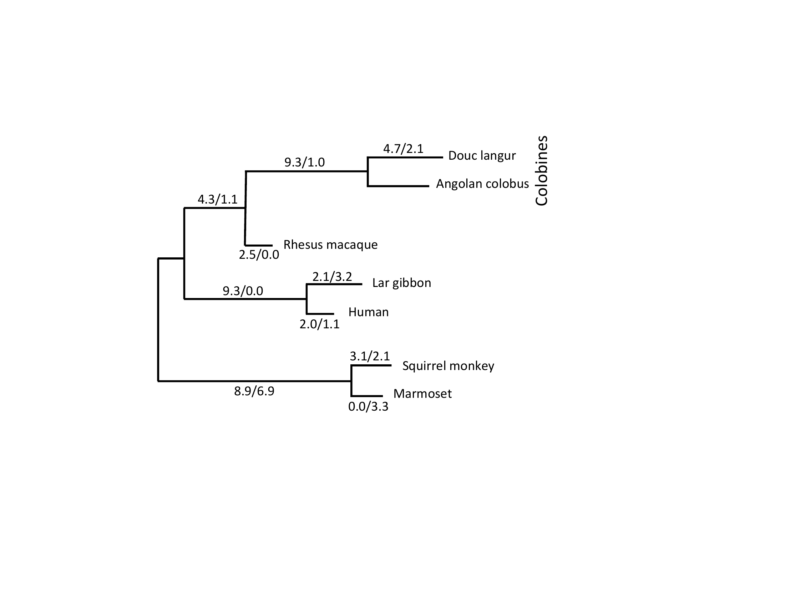
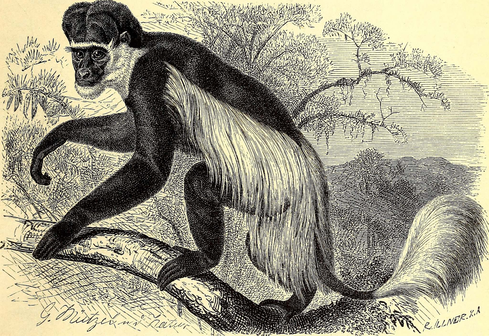
A classic example for looking at adaptive evolution using \({}^{d_N}\!/\!{}_{d_S}\) is the evolution of the lysozyme gene in primates (Messier and Stewart 1997; Yang 1998). The lysozyme protein is a key component for the breakdown of bacterial walls. The lysozyme gene shows very fast protein evolution (see the phylogeny in Figure 5.11), notably on the lineages leading to apes (e.g. gibbons and humans) and Colobines (e.g. colobus and langur monkeys). Colobines have leaf-based diets. They digest these leaves by bacterial fermentation in their foregut, and then use lysozymes to break down the bacteria to extract energy from the leaves. In Colobines, the lysozyme protein has evolved to work well in the high-PH environment of the stomach. Remarkably, the Colobine lysozyme protein has convergently evolved this activity via very similar amino-acid changes at 5 key residuals in cows and Hoatzins (a leaf eating bird, Kornegay et al. 1994)
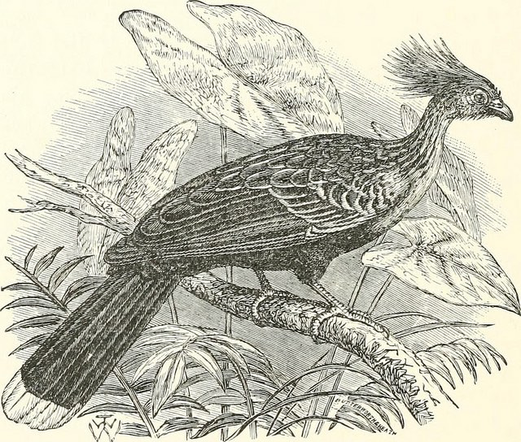
The McDonald-Kreitman test.
As noted above, a big issue with using \({}^{d_N}\!/\!{}_{d_S}\) to detect adaptation is that it is very conservative. For a more powerful test of rapid divergence, what we need to do is adjust for the level of constraint a gene experiences at non-synonymous sites. One way to do this is to use polymorphism data as an internal control. If we see little non-synonymous polymorphism at a gene, but a lot of synonymous polymorphism, we now know that there is likely strong constraint on the gene (i.e. high \(C\)), thus we expect \({}^{d_N}\!/\!{}_{d_S}\) to be low. McDonald and Kreitman (1991) devised a simple test of the neutral theory of molecular evolution at a gene based on this intuition (building on the conceptually similar HKA test Hudson et al. 1987). McDonald and Kreitman (1991) took the case where we have polymorphism data at a gene for one species and divergence to a closely related species. They partitioned polymorphism and fixed differences in their sample into the number of non-synonymous and synonymous changes:
| Poly. | Fixed | |
|---|---|---|
| Non-Syn. | \(P_N\) | \(D_N\) |
| Syn. | \(P_S\) | \(D_S\) |
| Ratio | \(P_N/P_S\) | \(D_N/D_S\) |
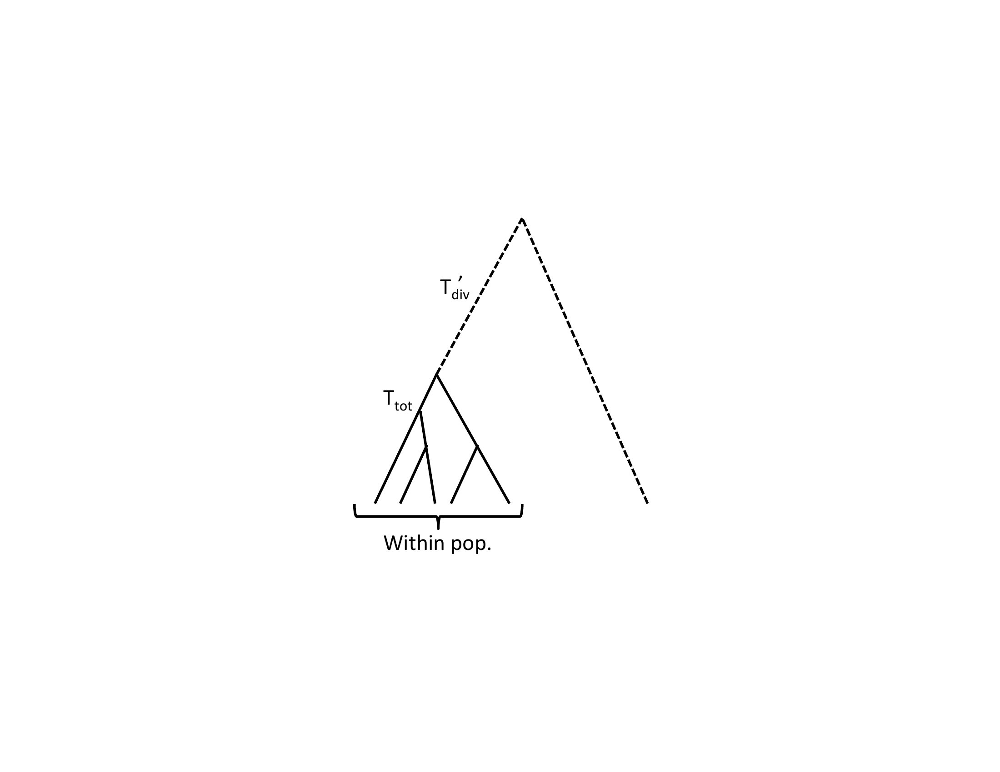
Under neutral theory, we expect a smaller number of non-synonymous to synonymous fixed differences (\(D_N/D_S < 1\)) and exactly the same expectation holds for polymorphism (\(P_N/P_S\)). Let’s consider a gene with \(L_S\) and \(L_N\) sites where synonymous and non-synonymous mutations could arise respectively. We can think of the underlying gene genealogy at our gene, see Figure 5.14, with the total time on the coalescent genealogy within the species as \(T_{tot}\) and the total time for fixed differences between our species as \(T_{div}'\), note that \(T_{div}'\) is the total time where a an allele that would appear as a subsitution could arise. Then under neutrality we expect \(\mu L_N (1-C) T_{tot}\) non-synonymous polymorphisms (i.e. our number of segregating sites), and \(\mu L_N (1-C) T_{div}'\) non-synonymous fixed differences. We can then fill out the rest of our table as follows:
| Poly. | Fixed | |
|---|---|---|
| Non-Syn. | \(\mu L_N (1-C) T_{tot}\) | \(\mu L_N (1-C) T_{div}'\) |
| Syn. | \(\mu L_S T_{tot}\) | \(\mu L_S T_{div}'\) |
| Ratio | \(L_N(1-C)/( L_S)\) | \(L_N (1-C) / ( L_S)\) |
Therefore, we expect the ratio of non-synonymous to synonymous changes to be the same for polymorphism and divergence under a strict neutral model. We can test this expectation of equal ratios via the standard tests of a \(2 \times 2\) table. If the ratio of \(N/S\) is significantly higher for divergence than polymorphism we have evidence that non-synonymous substitutions are accumulating more rapidly than we would predict given levels of constraint alone.
As example of a Mcdonald-Kreitman (MK) table consider the work of Frentiu et al. (2007) on the molecular evolution of L photopigment opsin in admiral (Limenitis) butterflies, responsible for colour vision in the long-wavelength part of the visual spectrum. Frentiu et al. (2007) found that the sensitivity of this opsin had shifted towards blue in its sensitivity in L. archippus archippus (viceroy) compared to L. arthemis astyanax. To test whether this molecular evolution reflected positive selection they sequenced 24 L. arthemis astyanax individuals and one L. archippus archippus sequence. They identified 11 polymorphic sites in L. arthemis astyanax and 16 fixed differences, which break down as follows:
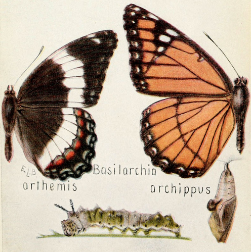
| Poly. | Fixed | |
|---|---|---|
| Non-Syn. | \(2\) | \(12\) |
| Syn. | \(9\) | \(4\) |
| Ratio | \({}^{2}\!/\!{}_{9}\) | \({}^{3}\!/\!{}_{1}\) |
Note the strong excess of non-synonymous to synonymous divergence compared to polymorphism (p-value of \(0.006\), Fisher’s exact test), which is consistent with the gene evolving in an adaptive manner among the two species. We would expect roughly only \(3\) non-synonymous substitutions out of 16 substitutions if the gene was evolving neutrally (\(16 \times {}^{2}\!/\!{}_{11}\)).
Chapter summary.
In a diploid population of size \(N\), any of a set of \(2N\) selectively equivalent (ie neutral) alleles are equally likely to be the ancestor of the entire population at some future distant time point. Therefore, the probability that a new mutation eventually fixes in the population is \({}^{1}\!/\!{}_{2N}\).
Under a model where a fraction \(C\) of new mutations are neutral and \(1-C\) mutations are strongly deleterious, \(2NC\mu\) mutations arise every generation that can possibly become substitutions. Therefore, the per-generation rate of neutral substitution is \(2N(1-C)\mu \times {}^{1}\!/\!{}_{2N} = (1-C)\mu\). This is independent of the population size and just depends on levels of constraint and mutation rates.
The constant rate of neutral substitution gives rise to a per-generation molecular clock, which can potentially be used to estimate constraint (\(C\)) and mutation rates.
Many summaries and tests of molecular evolution, e.g. \({}^{d_N}\!/\!{}_{d_S}\), are based on comparing rates of substitution between functional classes of sites. These allow differing levels of constraint to be identified and signals of adaptive substitution to be detected.
Tests of molecular evolution for adaptation that also incorporate both divergence and polymorphism, e.g. the Mcdonald-Kreitman test, are potentially powerful tools as polymorphism levels allow a somewhat independent measure of levels of constraint.
Question 5.3 Assuming that the mutation rate is \(\mu\)/gamete/generation and the population size is N diploid individuals, what is the number of new mutations introduced into the population each generation?
Question 5.4 What is the probability of fixation of a unique new, neutral mutation in a population of N haploid individuals?
Question 5.5 Why is dN/dS much less than one for the majority of genes in our genome?
Question 5.6 You sequence a gene in Drosophila melanogaster and D. simulans. You observe 5 non-synonymous substitutions out of 500 bases where non-synonymous substitutions could occur, and 15 synonymous substitutions out of 500 bases where synonymous substitutions could occur. What is the level of constraint at nonsynonymous sites?
Question 5.7 Analyzing polymorphism and divergence data for a gene, you calculate the following McDonald-Kreitman table.
| Polymorp. | Fixed | |
|---|---|---|
| Synonymous | 40 | 80 |
| Non-synonymous | 20 | 80 |
A) Based on the ratio of non-synonymous to synonymous polymorphisms, and given the 80 synonymous substitutions, how many nonsynymous substitutions would you expect if this gene were evolving neutrally?
B) Is this table consistent with the gene evolving neutrally? If not what could explain the results?